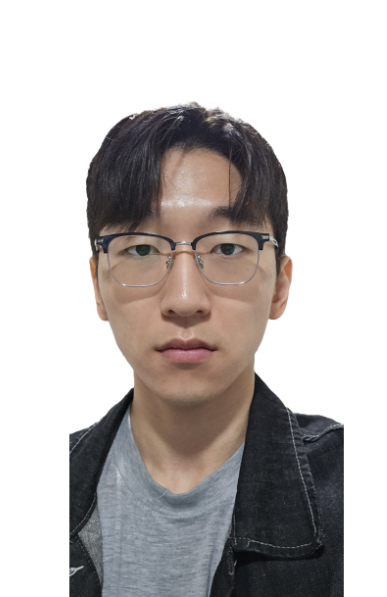

I'm pursuing a master's degree at the graduate school of computing at KAIST, under the advisement of
Prof. Jeehoon Kang, at KAIST Concurrency & Parallelsim Lab.
My interests are: systems programming, compilers, machine learnings and programming languages.
I want to build a compiler, runtime and programming model that fill the gap between larger and larger AI models and more and more heterogenous architectures.
Contact
- Email : haechan.an_at_kaist.ac.kr
- Github : AnHaechan
Current Research Topic
AI compilers for distributed & heterogeneous accelerators
Deep learning models, such as generative AI, are increasingly demanding more computation, memory and bandwidth. To efficiently handle those resource demands, (1) various specialized accelerators have been proposed and (2) the model executions are being distributed to multiple hardwares. The benefit of using multiple heterogeneous accelerators can only be utilized by a software stack, including specialized compiler and runtime, which bridges the high-level application and low-level hardwares. However, currently there are limited compiler support that can automatically generate efficient execution plans for varying models, given multiple different accelerators including NPU(Neural Processing Unit) and PIM(Processing In Memory). My research goal is to design such "AI compilers for distributed & heterogeneous accelerators".
Experiences
- 2021.01-2021.10, Undergraduate Internship, at KAIST PLRG : instrumentation of JNI programs for bug-catching using dataflow analysis : finding Rust type patterns for shared mutable states in TockOS
- 2022.01-2022.02, Startup, at Bapyak : developing data pipeline and web frontend
- 2022.03-2022.06, Undergraduate Internship, at KAIST Prosys Lab : study on static program analysis and program synthesis
- 2022.07-, Undergraduate Internship & Master's Student, at KAIST Concurrency and Parallelism Lab : worked on serving ML pipelines on NPU & GPU servers, with adpative scheduling (~5 mo) : tried to work on automatic program verification by a neuro-symbolic approach (~11 mo) : currently working on AI compilers. Especially for optimizing LLM inference on distributed and heterogeneous hardwares, including NPU & PIM. (2024.03-)
Programming languages / Dev tools
- General purpose: Python (proficient)
- Systems progamming: Rust (proficient) and C
- Functional programming: Ocaml
- Interactive theorem proving: Coq
- Machine learning: PyTorch
- GPU programming: CUDA and Triton (learning now)
- Dev tools: Familar with basic dev tools, including Linux, Git, Docker, ssh and GCP
Publications / Projects
- [Publication] One paper (contributed as third author) is under revision
- [Project] Submited a survey report on AI compilers (proprietary)
- [Project] Currently leading a project on building a PIM compiler for LLMs (national)
- [Project] Currently particpating a project on building a NPU compiler based on Triton (proprietary)
Education
- 2018.03-2023.02, KAIST School of Computing (Undergraduate), GPA 4.04/4.3
- 2019.12-2020.01, Yonsei University (Exchange student)
- 2023.03-, KAIST Graduate School of Computing (Masters student)
Teaching experiences
- TA of CS420 Compiler Design , 2023 Spring
- TA of CS220 Programming Principles , 2023 Fall
Honours
- School of Computing, Dean's List, 2019 Spring
- School of Computing, Department Valedictorian, 2019 Fall
- School of Computing, Dean's List, 2020 Fall
- Graduation from School of Computing with Summa Cum Laude, 2022 Fall
- School of Computing, Excellent TAs, 2023 Spring
- School of Computing, Excellent TAs, 2023 Fall
Advanced courses I've taken so far
- Programming Languages & Software Engineering
- CS402, Logic for Computer Science
- CS420, Compiler Design
- CS431, Concurrent Programming
- CS448, Introduction to Information Security
- CS453, Automated Software Testing
- CS520, Theory of Programming Languages
- CS524, Program Anaylsis
- IS593, Program Reasoning
- Software Foundations: Logical Foundations
- Software Foundations: Programming Language Foundations
- Systems & Architectures
- CS411, Systems for AI
- CS420, Compiler Design
- CS431, Concurrent Programming
- CS492A, Virtualization
- CS510, Computer Architecture
- EE595, Parallel Computer Architecture
- Machine Learning & AI
- CS411, Systems for AI
- CS470, Introduction to Artificial Intelligence
- Stanford CS224n, Natural Language Processing with Deep Learning
- EE534, Pattern Recognition
- EE595, Parallel Computer Architecture